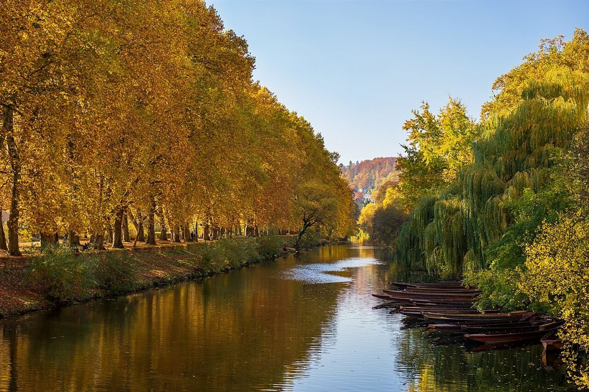
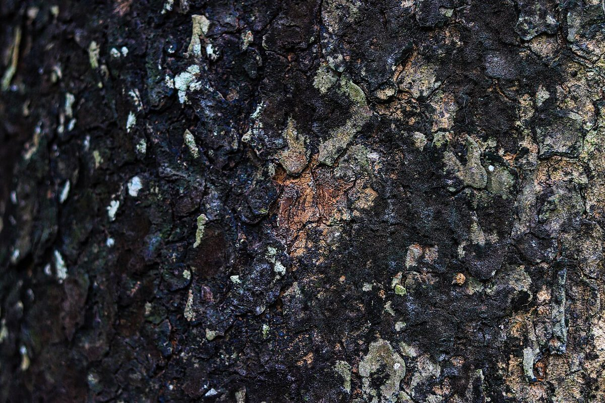
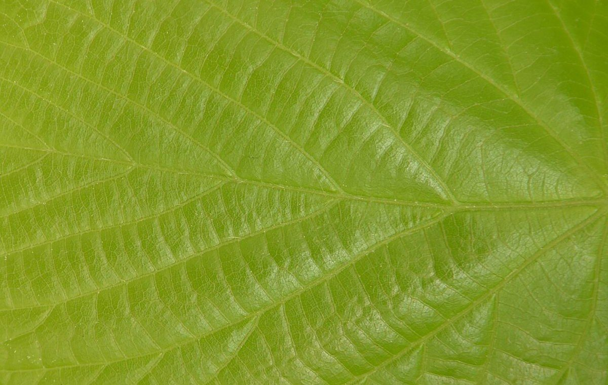

プラタナス
CAFE ／ 長野県木曽郡木曽町



制作側の連想
「プラタナス」から、まだら模様の幹を思った
プラタナスは樹木の名前でもあり、その幹は樹皮がまだらにはがれ、灰緑や黄土色の地肌がパッチワークのように見えることがあるそうです。このサイトは、その「はがれた樹皮の一片ずつ」を真似て、ページも写真も不揃いな多角形の片で組んでいます。
これは制作側の連想で、お店の理念・屋号の由来とは無関係です。屋号が樹木の名と同じ語であること以外、由来は分かりません。

四つの片ほかのページへ
 片 03メニュー
片 03メニュー 片 04口コミ
片 04口コミ 片 05アクセス
片 05アクセス確認できたことお店のご案内
| 所在地 | 〒397-0001 長野県木曽郡木曽町福島5129 |
|---|---|
| 電話 | なし |
| 営業時間 | 準備中 |
| 定休日 | 準備中 |
| ご予約 | 準備中 |
| 駐車場 | 準備中 |
| SNS | Instagram @platanus_kiso |
上の飾り写真はフリー素材のイメージで、お店や木曽町の写真ではありません。